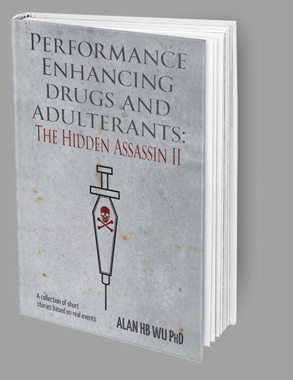

PERFORMANCE ENHANCING DRUGS AND ADULTERANTS:
THE HIDDEN ASSASSIN II
A rogue chemist creates an empire to support the needs of illegal drug users consisting of athletes seeking to enhance performance, women trying to stay young, men trying to stay virile, and drug addicts trying to avoid detection. This is an eye opening revelation about the world of drugs and hormones. Ripped from headline news, these stories document how illegal substances affect the lives of many individuals wanting to get an edge.
BUY IT NOW
Available From


CHAPTER SUMMARIES
PERFORMANCE ENHANCING DRUGS AND ADULTERANTS is a collection of short stories based on real medical and forensic cases. Below you'll find brief summaries explaining each story.
-
Urine Luck
This is a reproduction of the story originally printed in my book, “Toxicology! Because What You Don’t Know Can Kill You.” It is about Calvin, a lab technologist who is trying to catch Jaco, a bus driver who is adulterating his urine so that he can pass his drug test. Calvin’s failure to catch Jaco’s practices leads to a catastrophic event.
-
Accident Aftermath
Disillusioned about what has happened, Calvin leaves the profession and meets a man of questionable reputation. With his financial backing, they form a company designed to legally defraud the drug testing industry and to produce performance enhancing drugs, chemicals and hormones. The products his company makes affect the lives of many individuals.
-
Mask
A research technician uses a masking agent to hide his drug addiction. One day, while hallucinogenic, he is careless in handling a very dangerous reagent in an experiment he is conducting. Later, his boss is accidently and unknowingly exposed to this chemical.
-
The Prosthetic
A professional football player subjected to random urine drug testing hides his abuse of anabolic steroids through the purchase of a prosthetic penis. There he is able to donate someone else’s drug free urine. His continued steroid abuse leads to a bad outcome.
-
Whippet
Members of a rock band regularly inhale a gas contained within a small canister in order to enhance their sexual experience. After a concert, one of the singers meets a fan in their hotel room. The girl has never tried this inhalant but is willing and able. Unfortunately, her body does not react to the presence of this gas in the expected manner.
-
Bagel
A pregnant school teacher delivers an underweight baby. The hospital doctors order a drug test and find opiates in the child's urine. Child Protective Services removes the baby from the family pending an investigation of the woman’s prenatal drug history. How does she prove her innocence?
-
Flush
An Asian graduate student attends a party at a fraternity. Normally, she cannot drink a lot of alcohol because it produces a rash and a flushing reaction. On this day, she is given a drink laced with a drug that renders her semi-unconscious. She is sexually assaulted without her knowledge. The next day, she reports her assault to the University who conducts a criminal investigation.
-
The Beta Blocker Assassin
A spy is assigned the assassination of a prominent businessman. He is an accomplished biathlete in cross country skiing and rifle shooting. The agent uses a pre-Olympic biathlon event to accomplish his job.
-
The Fountain of Youth
Athletes are using human growth hormone or hGH to increase muscle mass. An aging actress believes that injections of hGH will keep her young looking and attractive. She ignores the warning that these supplements may be dangerous.
-
The Dope
The son of a blood bank director learns about blood doping. He gains access to his own blood for the purposes of improving his bicycling performance. Later he abuses red-cell producing hormones. He becomes an elite cyclist but eventually gets caught by the International Cycling Organization.
-
Footlights
A promising high school basketball player takes an herbal supplement thinking that it is safe and that it will improve his breathing and athletic performance on the court. He suffers a cardiac arrest after a strenuous workout which permanently damages his heart. He has to retire from the sport and becomes a taxi driver.
-
Gonadal Blues
A baseball player is taking testosterone supplements to improve his hitting power because his natural testosterone levels are low. He learns that taking human choriogonadotropin or hCG, a female hormone produced during pregnancy, can restore his production of epitestosterone, important in enabling him to escape detection of hCG use.
-
Uneven Bars
A young girl is obsessed in excelling in gymnastics. She is competing against a childhood friend. In order to maintain a body that is more conducive to this sport, she takes hormones that delay her puberty.
-
Too Tall For Comfort
A very tall woman becomes an accomplished volleyball player. She helps the US National Team achieve Olympic success. During an intense match, she collapses on the court. An investigation is conducted to determine what happened.
-
Crescentoid Blood
An African American woman takes up competitive tennis. Based on early success, she is offered an athletic scholarship. The NCAA requires that she be tested for the presence of sickle cell disease or trait. The test has an inherent flaw and an erroneous result is produced on the tennis star.
-
To ECG or Not To ECG
Over 25 years ago, a college basketball star collapses on the court after a difficult game. Doctors determine that he has a genetic heart defect that was unknown to him, his family, and coaches. While a screening test is available today to detect this condition, it is not being used on elite athletes.
-
Dishwashing Liquid
The first lady is pregnant with her fourth child. Immediately after birth, the infant boy struggles to breathe. A few miles up the road, a young pediatrician discovers a test that can be used to diagnose this respiratory condition before the baby is born. How would American history be changed had this test been available?
-
Cursed
A woman who could be the next Queen of England is trying to get pregnant and deliver a healthy child in order for her family to continue ruling the Empire. A young doctor diagnoses her with a clotting disorder and treats her with the bark of a willow tree. He is successful and the future Queen has children, changing the course of western history.
-
Revenge
Jaco, the man who adulterated his urine, was sentenced to a prison term for his deeds. He is out on parole for good behavior. Calvin has never forgiven Jaco for his actions and is dismayed at his early release. As a chemist, he has the means and knowledge to get revenge.